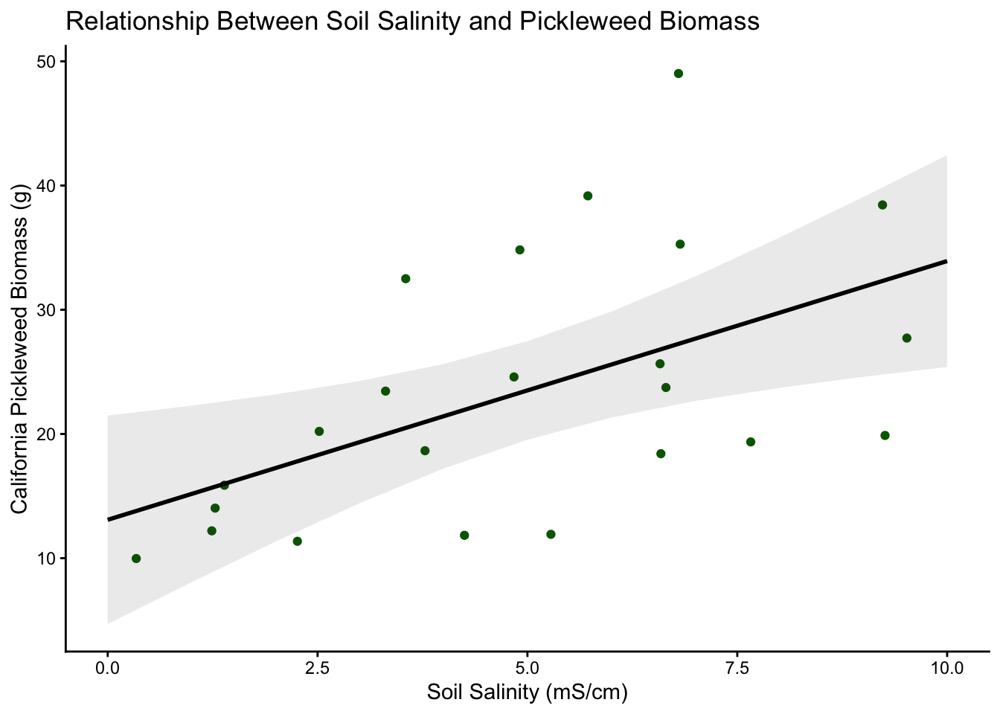
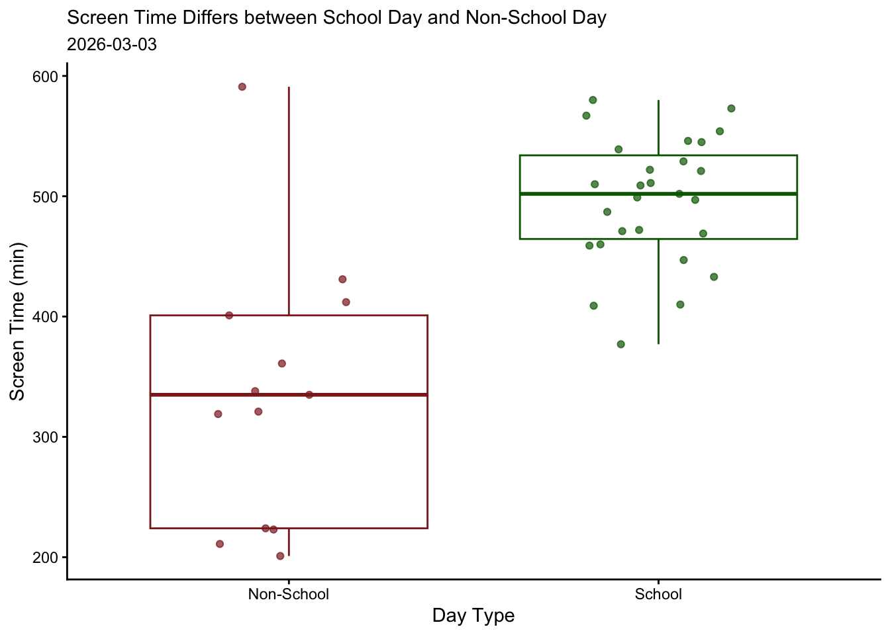
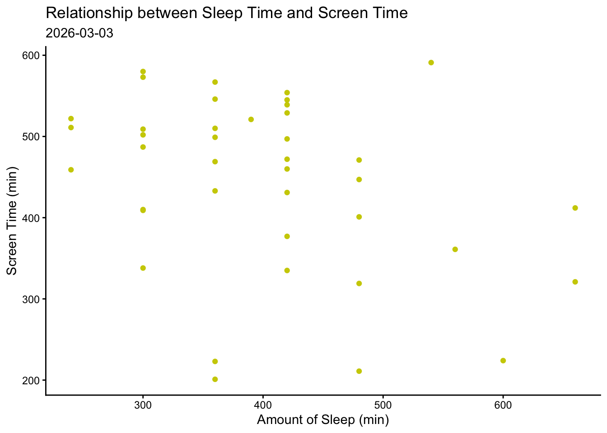
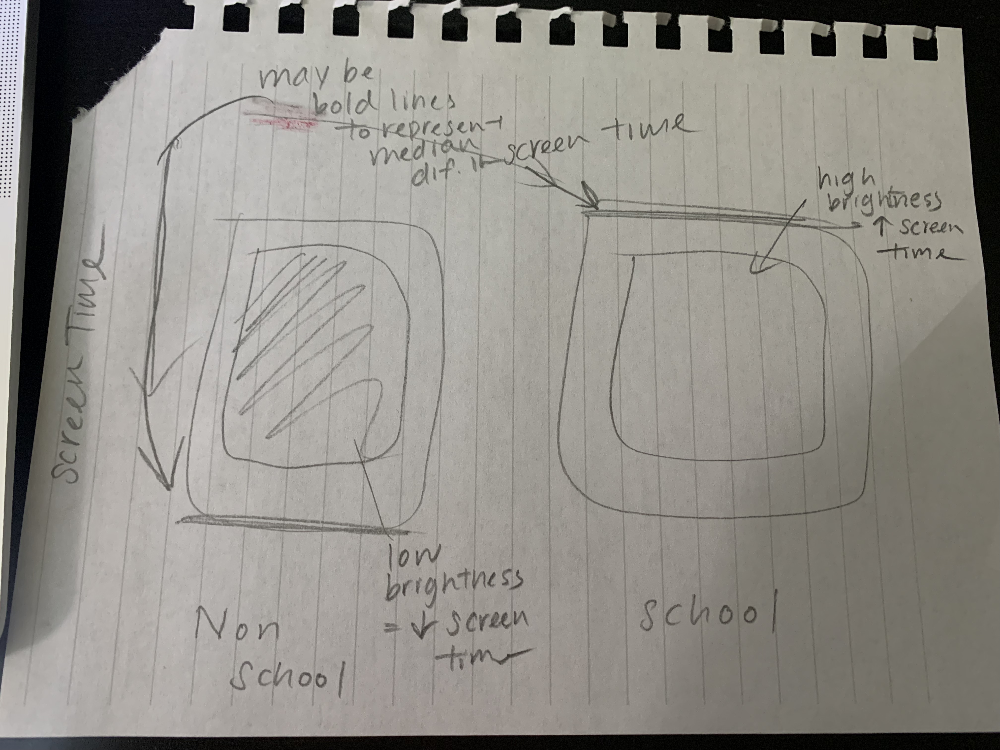
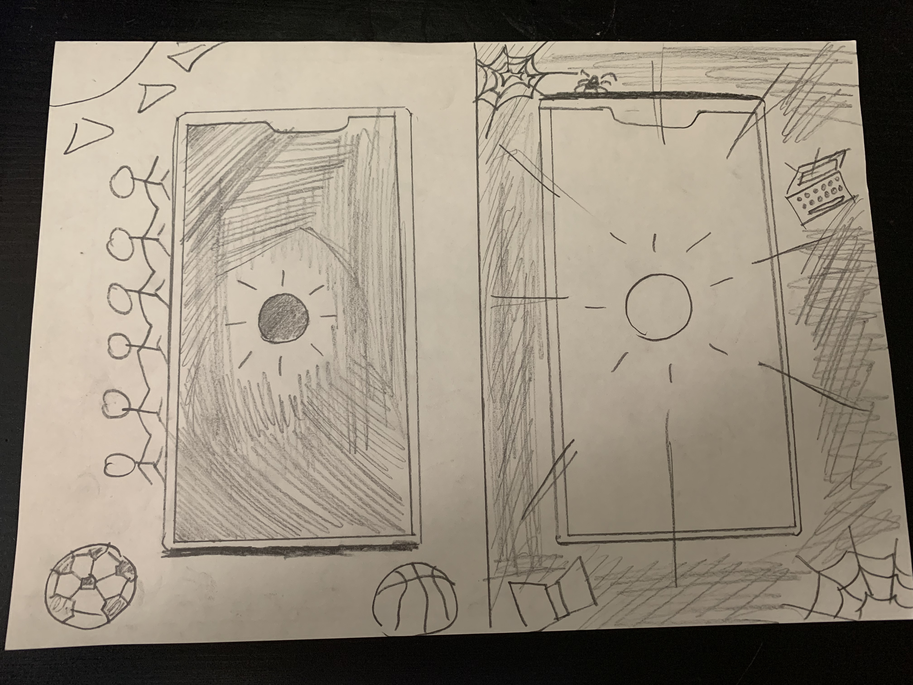
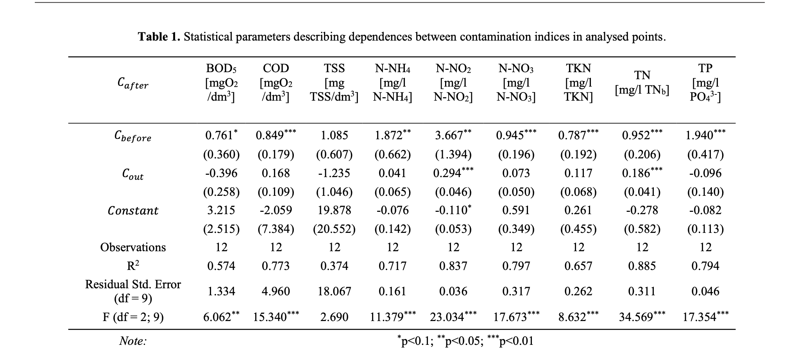

library(tidyverse) # reading in tidyverse
library(here) # reading in here package
library(janitor) # read in janitor package
library(readxl) # read in readxl package
library(ggeffects) # read in ggeffecrs package
salinity <- read_csv(here("data", "salinity-pickleweed.csv")) # store salinity-pickleweed.csv data in object salinity
personal <- read_csv(here("data", "env193ds_personaldata.csv")) # store env193ds_personaldata.csv data in object personalhomework_3
GitHub Repository: View Repository
Set Up
Problem 1. Slough soil salinity
a. An appropriate test
Two appropriate tests are Pearson’s correlation and Spearman’s rank correlation, which measures the STRENGTH of the relationship between soil salinity and California pickleweed biomass. Pearson’s correlation uses two continuous variables that were observed independently, and assumes that the variables are normally distributed to see how strongly two variables change together in a straight-line/linear relationship. Spearman’s rank correlation looks for monotonic relationship between variables by ranking the values for each variables separately in independent observations without assuming normality, meaning they evaluate whether or not biomass generally increases or decreases with salinity.
b. Create a visualization
pickleweed_model <- lm( # create model object with function to fit a linear model
pickleweed ~ salinity_mS_cm, # pickleweed biomass is predicted by salinity
data = salinity) # choose data frame salinity
pickleweed_preds <- ggpredict( # creating a new object called pickleweed_preds
pickleweed_model, # model object
terms = "salinity_mS_cm") # predictor
# base layer: ggplot call
ggplot(data = salinity, # use salinity data frame
aes(x = salinity_mS_cm, # set x axis to salinity_mS_cm column
y = pickleweed)) + # set y axis to pickleweed column
geom_point(color = "darkgreen") + # first layer: scatter plot & change color to dark green
geom_ribbon(data = pickleweed_preds, # second layer: ribbon for CI
aes(x = x, # set x-axis
y = predicted, # set y-axis
ymin = conf.low, # set ymin as lower end of CI
ymax = conf.high), # set ymax as higher end of CI
alpha = 0.1) + # lower opacity
geom_line(data = pickleweed_preds, # third layer: trendline
aes(x = x, # set x-axis
y = predicted), # set y as predicted values
linewidth = 1) + # change width of the trendline
labs(
x = "Soil Salinity (mS/cm)", # change x-axis label
y = "California Pickleweed Biomass (g)", # change y-axis label
title = "Relationship Between Soil Salinity and Pickleweed Biomass") + # name the title of the graph
theme_classic() # change ggplot theme to minimal
c. Check your assumptions and run your test
Checking assumption:
ggplot(data = salinity, # starting data frame
aes(sample = salinity_mS_cm)) + # y-axis for a QQ plot
geom_qq_line(color = "blue") + # reference line in blue
geom_qq() + # actual points for the QQ plot
theme_minimal() + # changing the theme to minimal
theme(legend.position = "none") #taking out legend-1.png)
ggplot(data = salinity, # starting data frame
aes(sample = pickleweed)) + # y-axis for a QQ plot
geom_qq_line(color = "red") + # reference line in blue
geom_qq() + # actual points for the QQ plot
theme_minimal() + # changing the theme to minimal
theme(legend.position = "none") #taking out legends-1.png)
I checked the assumptions of normality and linearity for Pearson’s correlation. I used QQ plots to visually assess whether the distributions of soil salinity (mS/cm) and pickleweed biomass (g) were approximately normal, and I used a scatterplot from part b to visually check whether the relationship between the variables appeared linear. The QQ plots for both salinity and biomass showed individual observations roughly following the reference line with very little outliers and the scatterplot suggested a roughly linear relationship, indicating that this data met all appropriate assumptions.
Running Pearson’s correlation test
cor.test( # correlation test call
salinity$salinity_mS_cm, # choose salinity column for one variable
salinity$pickleweed, # choose pickleweed column for another variable
method = "pearson") # choose Pearson's correlation
Pearson's product-moment correlation
data: salinity$salinity_mS_cm and salinity$pickleweed
t = 2.8979, df = 21, p-value = 0.008605
alternative hypothesis: true correlation is not equal to 0
95 percent confidence interval:
0.1568265 0.7757682
sample estimates:
cor
0.5344778 d. Results communication
Which test used and why:
To evaluate the strength of the relationship between California pickleweed biomass (g) and soil salinity (mS/cm), I used a Pearson’s correlation test because both variables are continuous & normally distributed, and I wanted to measure the strength of their relationship.
Interpretation of the test:
The results show a moderate positive relationship between soil salinity and pickleweed biomass, meaning that pickleweed biomass tends to increase as soil salinity increases. The correlation coefficient was moderate and positive (Pearson’s r = 0.53, t(21)= 2.90, p = 0.0086, \(\alpha\) = 0.05), suggesting that higher salinity conditions are associated with greater pickleweed biomass in this restoration site.
e. Test implications
Our analysis shows a moderate and positive relationship between soil salinity and pickleweed biomass, meaning pickleweed tends to grow larger in areas with higher salinity levels. This statistical result suggests that restoration efforts of pickleweed may be more successful in parts of the site that are more saline, since pickleweed appears to have larger biomass at more saline conditions. When planning new plantings, we should prioritize areas with similar, high salinity levels to improve the chances of strong plant growth.
f. Double check your own work
cor.test( # correlation test call
salinity$salinity_mS_cm, # use salinity data
salinity$pickleweed, # use pickleweed biomass data
method = "spearman") # choose Spearman's correlation
Spearman's rank correlation rho
data: salinity$salinity_mS_cm and salinity$pickleweed
S = 824, p-value = 0.003426
alternative hypothesis: true rho is not equal to 0
sample estimates:
rho
0.5928854 The Spearman’s correlation also shows a significant positive relationship between soil salinity (mS/cm) and pickleweed biomass (g) (Spearman ρ = 0.593, S = 824, p = 0.0034, α = 0.05). The positive value of ρ (0.593) indicates a moderate positive monotonic relationship, meaning that as soil salinity increases, pickleweed biomass generally tends to increase as well. This leads to the same conclusion as the Pearson correlation test (Pearson’s r = 0.53, t(21) = 2.90, p = 0.0086, α = 0.05), where the positive r value (0.53) indicates a moderate positive linear relationship between the variables. While Pearson evaluates a linear relationship using the raw values, Spearman evaluates a monotonic relationship using ranked values, but both tests indicate a similar positive association between soil salinity and pickleweed biomass.
Problem 2. Personal data
a. Updating your visualizations
personal_clean <- personal |> # start with storing personal data frame in personal_clean
clean_names() # clean names so it only contains lowercase and underscore
ggplot(data = personal_clean, # start ggplot call with my_data_clean data frame
aes(x = day_type, # choose x-axis
y = screen_time_min,# choose y-axis
color = day_type)) + # change color based on day_type
geom_boxplot() + # first layer: boxplot
geom_jitter(height = 0, # second layer: jitter
width = 0.2, # no height jitter, limit horizontal jitter
alpha = 0.7) + # lower opacity of jitter
labs(title = "Screen Time Differs between School Day and Non-School Day", # label title
subtitle = "2026-03-03", # label subtitle with most recent observation date
x = "Day Type", # relabel x-axis
y = "Screen Time (min)") + # relabel y-axis
theme_classic() + # change ggplot theme
theme( # use theme() function
plot.title = element_text (size = 11), # change title size
plot.subtitle = element_text (size = 10)) + # change subtitle size
scale_color_manual(values = c( # Manually select colors of the graph
"School" = "darkgreen",
"Non-School" = "brown4" )) + # manually change colors of the graph to be different from default
theme(legend.position = "none") #taking out legend
ggplot(data = personal_clean, # start with my_data_clean data frame
aes(x = amount_of_sleep_min, # choose continuous variable x-axis
y = screen_time_min)) + # choose response variable for y-axis
geom_point(color = "yellow3") + # first layer: scatterplot & change point color to red
labs(title = "Relationship between Sleep Time and Screen Time", # label title
subtitle = "2026-03-03", # label subtitle with most recent observation date
x = "Amount of Sleep (min)", # relabel x-axis
y = "Screen Time (min)") + # relabel y-axis
theme_classic() # change ggplot theme 
b. Captions
Figure 1. Screen time differs between school days and non-school days.
Small semi-transparent points represent individual measurements of daily screen time (minutes) for school and non-school days. Non-school days are shown in red and school days in green. Boxplots summarize the distribution of screen time for each group, with the center line representing the median, the boxes representing the interquartile range (IQR), and the whiskers showing the spread of the data beyond the quartiles. Data collected March 3, 2026.
Figure 2. Relationship between sleep duration and screen time.
Small yellow points represent individual observations of screen time (minutes) plotted against amount of sleep (minutes) for each recorded day. Each point corresponds to one observation of sleep duration and the associated amount of screen time, allowing visualization of the overall pattern or relationship between the two variables. Data collected March 3, 2026.
Problem 3. Affective visualization
a. Describe in words what an affective visualization could look like for your personal data
My affective visualization will represent the difference in screen time between school days and non-school days using phone screen brightness as a metaphor. I will draw two phones side by side, where the brightness of each screen represents the average amount of screen time for that type of day. The school-day phone will glow much brighter, representing the higher screen time during those days, while the non-school day phone will appear dimmer to represent lower screen time, and I will also make gloomy drawing near school days phone and more lively environment for non-school day phone. The brightness visually communicates the feeling of being overwhelmed by screens on school days compared to more relaxed non-school days. This approach helps viewers emotionally understand how screen use changes depending on whether or not I have school that day, and how I am able to focus on other social activities or hobbies for non-school days.
b. Create a sketch (on paper) of your idea

c. Make a draft of your visualization

d. Write an artist statement
Content
This piece visualizes how my screen time differs between school days and non-school days. It communicates how the intensity of screen use changes depending on the demands of a school schedule and social plans/hobbies on weekends.
Influences
I got my idea from Jill Pelto, and how her drawing includes lines that resembles the original data visualization. I incorporated this idea of sprinkling hint of original data by bold line in my illustration to show screen time median differences while creating more artistic medium for data communication.
Form
The work is a hand-drawn illustration using a pencil and color pens to represent smartphone screens and light effects. The brightness of each phone screen visually represents the amount of time spent using screens.
Process
I first examined my screen-time data to understand how it differed between school days and non-school days, and used box and whisker plot + scatterplot to determine how there I had higher screen time on school days than non-school days. I then developed the concept of using screen brightness as a visual metaphor for screen time and sketched the phones as a draft to illustrate how the brightness levels correspond to the data as well as the bold lines to compare the median. I then filled out the perimeter of phones with darker, gloomy colors for school day, and more vibrant colors for non-school days with my hobbies to illustrate how my focus is elsewhere than electronics
Problem 4. Statistical critique
a. Revisit and summarize
The author addresses whether or not treated municipal wastewater from treatment plants significantly affects pollutant concentrations in the Bystrzyca River at its discharge point. The author also asks whether the river itself has self-purification processes in the natural environment, and assesses to the extent of its success in self-purification.
This paper utilizes linear regression as the basis of their statistical analysis of the experiment. Response variable is set as the pollutant concentration downstream of the discharge site, and predictor variable as the pollutant concentrations upstream and in the discharged wastewater.

b. Visual clarity
The table does a good job clearly summarizing the statistical results by showing regression coefficients, standard errors, and significance levels for each pollutant indicator. Each column corresponds to a different pollutant (BOD₅, COD, TN, TP, etc.), allowing the audience to easily see the differences side by side. However, the table includes many numbers and abbreviations (Cbefore, etc.), which can make it somewhat difficult to interpret quickly without referring back to the texts explaining this table above or index provided below this table. This table also does not show the underlying data on the table, but instead shows summarizing table after linear regression test was executed.
c. Aesthetic clarity
The table contains overwhelming amount of numbers, which creates some visual clutter because many values and grid lines compete for attention. There is no bold or italic formatting used to highlight important numbers, but the authors use asterisks next to coefficients to indicate statistically significant results. While these symbols help draw attention to important values, the table is still visually dense and requires careful reading to interpret the key findings. The table also has minimal grid lines, especially horizontal lines, that can make it more prone to mistakes in reading the data, leading to miscommunication of the results.
d. Recommendations
To improve the table, author can insert thinner lines in between each rows to reduce confusions between listed numbers, and can reduce visual clutters by adding more spaces between groups of variables. They can also use bold text or colors to improve effectiveness of the data communication and help readers quickly identify important findings. Another improvement would be adding clearer variable labels within the table to make it easier to interpret without having to refer back to the index or the caption. Alternatively, I would recommend a scatterplot with a regression line to visualize the relationship between pollutant concentration above the discharge point (Cabove) and concentration below the discharge point (Cabove). The x-axis would show Cabove, the y-axis would show Cbelow, individual sampling measurements would appear as points, and a linear model prediction line with a confidence ribbon would help illustrate the strength and direction of the relationship more clearly than the table alone.